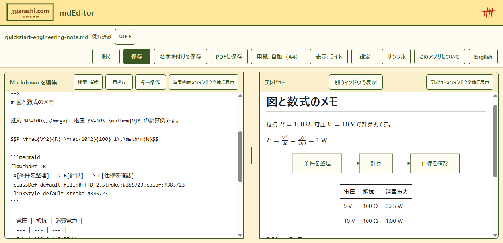

図と数式も、そのまま
Mermaidの図、KaTeXの数式、表を表示。プレビューの内容をPDFに保存できます。

mdEditor · WINDOWS
図も数式も、Markdownと一緒に。
編集した文書を、その場で確認できます。
Windows用・無料。提供版・動作要件はStoreで確認できます。

Mermaidの図、KaTeXの数式、表を表示。プレビューの内容をPDFに保存できます。
編集とプレビューが連動。プレビューを別ウィンドウに出して使うこともできます。
文字の大きさ・行間・書体を調整。キーボード操作と、PC内の音声による読み上げに対応。
実際の操作
Windows版を操作した実演です。字幕だけで手順が分かります。
動画を再生できませんでした。下の「動画を保存」からMP4を保存し、動画プレーヤーで開いてください。
別ウィンドウ、ダークモード、「書き方」（Syntax）を実演します。再生するとBGMが流れます。 Music: Light Steps v1 — 5garashi.com設計事務所の依頼でCodexが作曲・音源生成。
撮影・検証はソース版mdEditor 1.0.5。Storeの公開版・認定状況は未確認です。動画に音声・BGMはありません。
まずは1つ
外部画像のない、短いサンプルです。PCに保存して使えます。
まずはこれから。見出しと図の文字を変え、数式・表ごとPDFへ。
Markdownを保存 — 図と数式のメモフローチャート、表、チェックリストで作業の流れを残す。
Markdownを保存 — 文書レビューの手順回答の要点・出典・次の行動を整理する記入用テンプレート。
Markdownを保存 — 回答を整理するメモ回答整理のサンプルは記入用です。mdEditorにAI生成機能はありません。数式・表の値は自動計算されません。
より多くの図を試す既存サンプル文書の編集、図・数式の描画、PDF保存はPC内で処理します。mdEditor自体は文書や個人情報を収集・送信しません。
文書の外部画像は、その画像サーバーに接続します。WebView2の更新・診断はMicrosoftの設定に従います。
プライバシーポリシーを読む5garashi.com DESIGN OFFICE
mdEditorは、5garashi.com設計事務所の開発作品です。文書作成や業務の手順を支える道具、技術システムの開発について、事務所サイトからご相談ください。